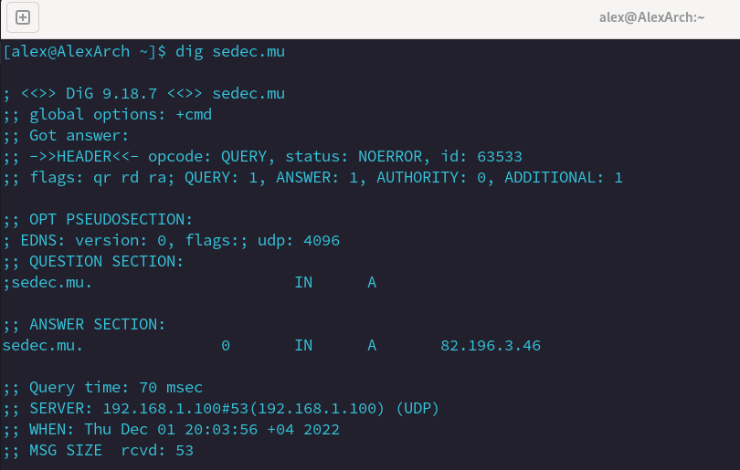
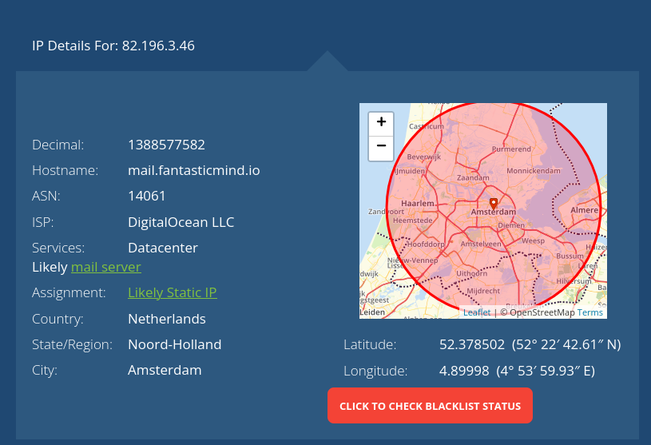
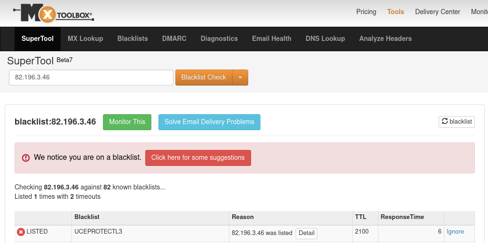
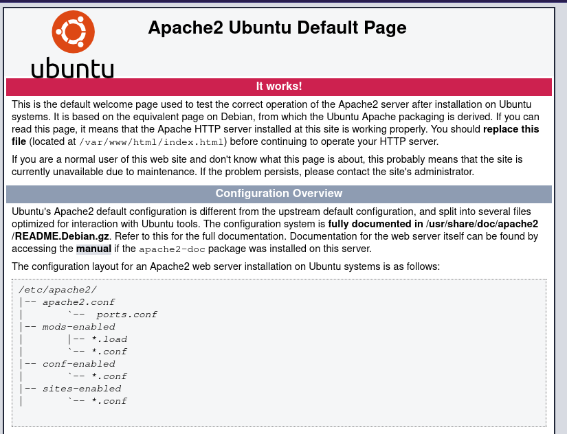

An Initiation to the Problem
I am a student at CSE in Mauritius. A while ago, the school had a serious issue - emails sent were often sent directly to my spam inbox and were marked as spam and malicious with a giant red warning banner from Google. How is it that the emails sent from a school were being flagged as such?
To start, CSE used a private email server. Most people use Gmail and thus the Gmail mail servers. However, you must have noticed some people have an email address ending in @yahoo.com. Well those people are using the Yahoo mail servers.
Private Mail Servers?
The typical thing for corporations and institutions is to use their own domain for their mail. The domain is this ending: mail@gmail.com. Having such a domain helps verify authenticity of sent emails and owning a private mail server gives you much more control over your sensitive information. How do you know Google isn’t reading your emails?
CSE, when sending emails to parents before, used a private mail server with a certain domain. Emphasis on “used to“. Now, it uses less appropriate gmail accounts accorded to staff. But alright, I am not here to say why this is completely inappropriate.
In fact, CSE used the SEDEC mail server. SEDEC is the entity governing all catholic schools in Mauritius. The domain here was mail@sedec.mu. Now, if I was getting spam and malicious warnings, does that problem extend further to other emails sent from that mail server? Gmail obviously was not warning me against the contents of the email but rather against the mail server it originated from. So, does this mean that other emails sent from mail@sedec.mu are also flagged as malicious? That might be a bit problematic.
Digging for the Problem
During DevCon, Ish Sookun had a session showing how to create your own mail server. This was really interesting for me and I told him all about this flaw the school had. Afterwards, he suggested some digging into the domain and the corresponding mail server to find the cause of the problem. He already had a good suspicion why but I will not spoil you, dear reader.
A few days ago, I finally got around to doing the digging, quite literally. There is this software package I can download called dnsutils. It’s a suite of really useful software, including the one I use here - the dig command. dig allows me to query a server for its IP address. All I have to do is type “dig sedec.mu” and I get a list of information pertaining to the server hosting the mail exchange server of mail@sedec.mu.

From here, I can see that mail@sedec.mu lives at the IP address 82.196.3.46. Interesting.
The website whatismyipaddress.com provides a really useful tool for looking up IP addresses. Looking up 82.196.3.46 shows the server is over in Amsterdam in the Netherlands. Everything seems fine so far. The website also says it is “likely a mail server” which we know to be true. A very peculiar thing though is the hostname. mail.fantasticmind.io. What a hostname that is! I am sure it is extremely reputable and very robust in preventing its servers from being used by spam bots (sarcasm).

Now we have the IP, we can also check if it appears on any IP blacklists. These blacklists exist in order to ensure the integrity of the internet. If an IP address is seen to be malicious, it is blacklisted, sort of as a warning to other internet users to be very careful of anything sent from there. And, when your server is used by spam bots which mass-send emails, then the IP range is bound to be blacklisted. Awesome! This finding corresponds to the blacklist the IP is on - uceprotect - which blocks ranges of IP addresses which are sending out spam.

Now, there is even more information to dig. “mail.fantasticmind.io“ may itself be a URL. What happens if I put it in my browser? Well, turns out there is a website behind the domain. What is on it? The default page hosted when you have successfully installed Apache2. Apache is software used for a web server - the server accessed when you request a webpage.

As a conclusion, what do we know? Well, we know the IP address of the server hosting mail@sedec.mu. We also know that this IP address is on the highest tier of a blacklist for hosting spam mail exchange servers. We know the hostname of the server and we know that this server has a webserver as well, which has never been set up or configured. Oh, and it does not even support HTTPS - just the usual HTTP (unencrypted).
We can therefore tell that the mail server here is an utter joke and it is ridiculous that SEDEC is trusting them with confidential information. But also, I have $10 on them not even knowing any of this. All I see here is complete incompetence and negligence. Oh, and both mail@sedec.mu AND sedec.mu (website) are still in use.